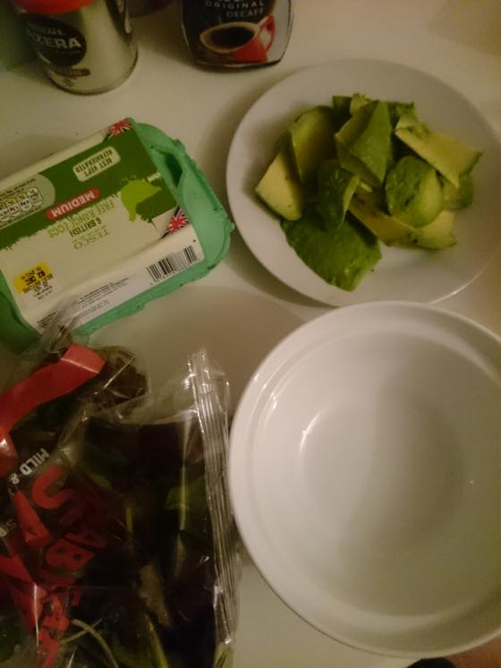
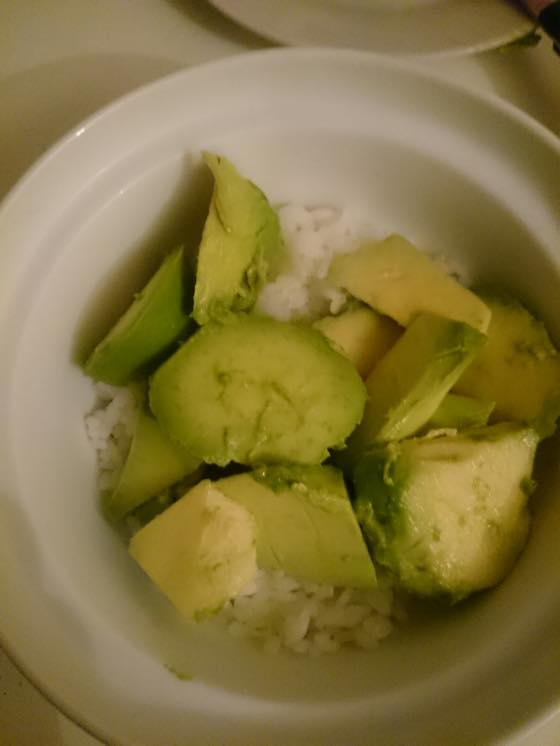
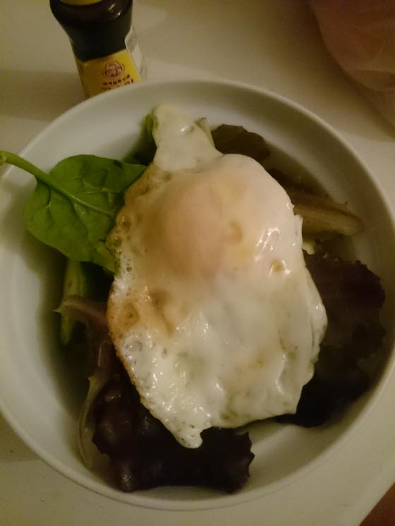

처음먹어본건 한국인이 운영하는 일식집이었는데
생각보다 조합이 괜찮습니다 :3 만들기도 간단하구요
아보카도 가격이 상대적으로 저렴한 (영국서는 개당 £1 정도) 해외 유학생들 + 저처럼 요리에 취미도없고 귀찮지만 가끔 쌀이먹고싶다 - 하시는 분들께 추천입니다 ^^;;;; 요즘에야 한인마트가 워낙 잘되어 있어서 런던이나 대도시 사는분들은 불편함 없으실거 같은데;; 그 동네 / 학교에 한국인 저 혼자였던 시절이 생각나는군욤 ^^;;;; 고추장 빼고는 전부 테스코에서 구입가능합니다 (큰 동네(?)는 요즘 테스코에서 고추장이랑 라면도 팔더군욤;; 제가 살던곳은 라면은 있는데 고추장은 안팔더라능;;)

아보카도 1개 사면 2인분 만들수 있습니다. 혼자 먹을거라믄 1/2
아님 밥 양을 줄이고 아보카도를 왕창 넣어도 괜찮습니다 (<- 좋아함 ㅋㅋ)
아보카도 1개 / mixed leaf / 달걀 / 쌀 / 고추장

밥위에 아보카도 썰어서 올려주고

그위에 mixed leaf 조금 + 계란 후라이 + 참기름 조금 (없어도 ok)
+ 고추장 넣고 슥슥 비벼먹으면 됩니다 ^^;;;
가끔 소세지나 새우 볶아서 넣어먹는데 것도 맛나요 :)
뭐 만들어 먹는거 참으로 귀찮아하는 인간인데(....) 요건 할만합니다 ^^;;;
가볍게 먹을수 있어서 좋아하는 메뉴에요 :)